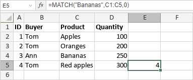

MATCH funkcija
MATCH funkcija je jedna od funkcija za pretragu i reference. Koristi se za vraćanje relativne pozicije određenog elementa u opsegu ćelija.
Sintaksa
MATCH(lookup_value, lookup_array, [match_type])
MATCH funkcija ima sledeće argumente:
| Argument | Opis |
|---|---|
| lookup_value | Vrednost u lookup_array koju želite da pronađete. Može biti numerička, logička, tekstualna vrednost ili referenca na ćeliju. |
| lookup_array | Jedan red ili kolona koje želite da analizirate. |
| match_type | Tip pretrage. Opcioni argument. Moguće vrednosti su navedene u tabeli ispod. |
match_type argument može biti jedna od sledećih vrednosti:
| Numerička vrednost | Značenje |
|---|---|
| 1 ili izostavljeno | Vrednosti moraju biti sortirane u rastućem redosledu. Ako se tačna vrednost ne pronađe, funkcija vraća najveću vrednost koja je manja ili jednaka lookup_value. |
| 0 | Vrednosti mogu biti u bilo kom redosledu. Ako se tačna vrednost ne pronađe, funkcija vraća grešku #N/A. |
| -1 | Vrednosti moraju biti sortirane u opadajućem redosledu. Ako se tačna vrednost ne pronađe, funkcija vraća najmanju vrednost koja je veća od lookup_value. |
Napomene
Kako primeniti MATCH funkciju.
Primeri
Slika ispod prikazuje rezultat koji vraća MATCH funkcija.
